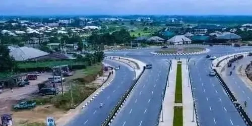

About Akwa Ibom
Akwa Ibom is a beautiful coastal state in the southern part of Nigeria. Its capital city is Uyo. The state is known for its welcoming people, rich culture, green landscapes, rivers, and coastline.
The people of Akwa Ibom include Ibibio, Annang, and Oron communities. Their traditions can be seen in local music, festivals, crafts, and food. Popular dishes include afang soup, edikaikong soup, and ekpang nkukwo.
Quick Facts
- Capital: Uyo
- Country: Nigeria
- Region: South-South Nigeria
- Known for: Culture, seafood, and hospitality
Weather
Condition: Partly cloudy
Temperature: 29 °C
Wind Speed: 12 km/h
Wind Chill: N/A